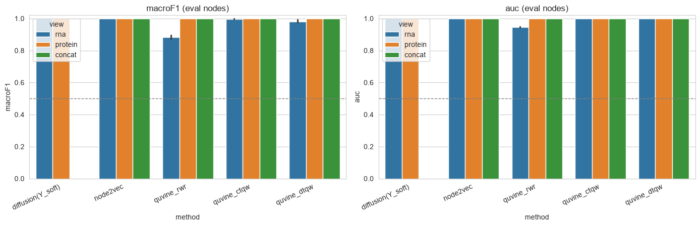
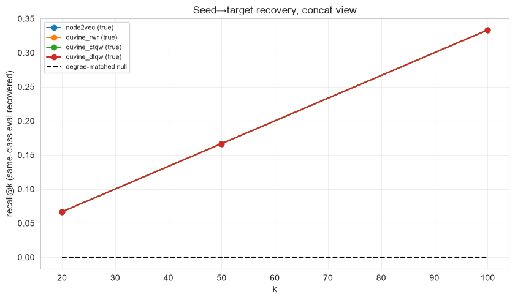

QuVINE on the T-vs-Monocyte cell graph#
Uses QuVINE (Quantum View-based Network Embeddings) on the mid-size, graph-only benchmark pbmc5k_graph_t_vs_mono.h5ad — 800 cells, balanced, with soft seeds / eval and two view-graphs (rna_connectivities, protein_connectivities).
Task framing. This is a semi-supervised, transductive node problem, and we evaluate it the two complementary ways QuVINE natively supports:
Node classification — train a classifier on the seed nodes’ embeddings, predict the eval nodes. Headline metric: macro-F1 / AUC on eval. We also include a native graph label-spreading baseline that diffuses the soft-seed matrix
Y_softover the graph (no embedding) — the most literal use of what this file was built for.Node ranking (seed→target) — rank all non-seed nodes by similarity to the seeds (
seed_centroid_scores), and measure how well same-class eval nodes are recovered (recall@k / precision@k) against degree- and distance-matched null controls (SeedTargetEvaluator). This uses the quantum walk directly, no downstream classifier.
Views. RNA-graph and protein-graph are embedded separately and as an early-fusion concat. (Note: QuVINE’s internal fuse= is fusion across walk kinds, which is different from this cross-modality concat.)
A subtlety worth stating: QuVINE’s embed(..., seeds=...) uses seeds as calibration anchors for building the quantum-walk targets — structural, internal to the embedding. Those are conceptually distinct from our label seeds (graph_seed). We deliberately set the calibration seeds = the labeled seed cells (calibrate the walk to spread from known anchors), but the two roles are not the same thing.
Install. QuVINE ships behind an optional extra, so a plain pip install qbiocode does not pull its dependencies (gensim, hiperwalk, node2vec, torch-geometric, python-louvain, ripser, omegaconf). Install it with:
pip install "qbiocode[quvine]"
Calling a quvine_* method without the extra raises an error naming the missing package and this exact command, rather than a bare ModuleNotFoundError.
This notebook also reads an .h5ad fixture, so it needs anndata — part of the base install.
1. Configuration#
[1]:
# ============================ CONFIG ============================
QUICK = True # small walk/training params so it runs on a laptop in a few minutes
METHODS = ["node2vec", "quvine_rwr", "quvine_ctqw", "quvine_dtqw"]
# node2vec : classical embedding baseline
# quvine_rwr : QuVINE SGNS on classical random-walk-with-restart views
# quvine_ctqw/dtqw : QuVINE SGNS on continuous/discrete-time QUANTUM walk views
VIEWS = ["rna", "protein"] # modality graphs to embed (and an early-fusion concat)
EVAL_MODE = "both" # "classification" | "ranking" | "both"
N_REPEATS = 3 # embedding seeds -> confidence intervals
K_VALUES = [20, 50, 100] # recall@k / precision@k cutoffs for ranking
# QuVINE embedding knobs (small in QUICK; the defaults are heavier)
QUVINE_OVERRIDES = (
{"views": {"num_views": 2}, "walks": {"num_walks": 5, "walk_length": 6, "steps": 10},
"train": {"epochs": 20, "workers": 1}, "workers": 1, "dimension": 32}
if QUICK else
{"train": {"workers": 1}, "workers": 1, "dimension": 64}
)
print("QUICK:", QUICK, "| methods:", METHODS, "| views:", VIEWS,
"| eval:", EVAL_MODE, "| repeats:", N_REPEATS)
QUICK: True | methods: ['node2vec', 'quvine_rwr', 'quvine_ctqw', 'quvine_dtqw'] | views: ['rna', 'protein'] | eval: both | repeats: 3
2. Imports & data#
[2]:
import warnings, time, os
warnings.filterwarnings("ignore")
os.environ.setdefault("OMP_NUM_THREADS", "1")
import numpy as np, pandas as pd, networkx as nx, anndata as ad
import scipy.sparse as sp
import matplotlib.pyplot as plt
import seaborn as sns
from sklearn.linear_model import LogisticRegression
from sklearn.preprocessing import StandardScaler
from sklearn.metrics import f1_score, accuracy_score, roc_auc_score
from qbiocode.apps.quvine import embed
from qbiocode.apps.quvine.evaluation.ranking import SeedTargetEvaluator, seed_centroid_scores
from qbiocode.utils import tutorial_data_path
sns.set_style("whitegrid")
# ---- Data path ----
# tutorial_data_path() is QBioCode's single resolution path for tutorial fixtures. It
# searches $QBC_DATA first, then every fixture directory of a source checkout -- located
# both from the installed package and by walking up from this notebook's directory, so it
# works for an editable install and for a normal install used inside a clone -- and raises
# a FileNotFoundError naming every directory it tried. Fixtures shared between tutorials
# are committed once and found from either tree.
H5AD = tutorial_data_path("pbmc5k_graph_t_vs_mono.h5ad")
adata = ad.read_h5ad(H5AD)
N = adata.n_obs
IDS = [f"c{i}" for i in range(N)] # STRING node ids (required by QuVINE SGNS)
CLASS_ORDER = list(adata.uns["graph_benchmark_notes"]["class_order"]) # [T_cell, Monocyte]
y = adata.obs["label_int"].to_numpy().astype(int) # 0=T_cell, 1=Monocyte (matches CLASS_ORDER)
seed_m = adata.obs["graph_seed"].to_numpy().astype(bool)
eval_m = adata.obs["graph_eval"].to_numpy().astype(bool)
Y_soft = np.asarray(adata.obsm["Y_soft"], dtype=float)
def to_graph(adj):
adj = adj.tocoo(); G = nx.Graph(); G.add_nodes_from(IDS)
for i, j, w in zip(adj.row, adj.col, adj.data):
if i < j:
G.add_edge(IDS[i], IDS[j], weight=float(w))
return G
GRAPHS = {v: to_graph(adata.obsp[f"{v}_connectivities"]) for v in VIEWS}
ADJ = {v: adata.obsp[f"{v}_connectivities"].tocsr().astype(float) for v in VIEWS}
seed_nodes = [IDS[i] for i in np.where(seed_m)[0]] # label seeds (also used as walk calibration seeds)
print(f"{N} nodes | classes {CLASS_ORDER} | seeds {seed_m.sum()} eval {eval_m.sum()}")
for v in VIEWS:
print(f" {v} graph: {GRAPHS[v].number_of_nodes()} nodes, {GRAPHS[v].number_of_edges()} edges")
800 nodes | classes ['T_cell', 'Monocyte'] | seeds 200 eval 600
rna graph: 800 nodes, 8186 edges
protein graph: 800 nodes, 9100 edges
3. Compute QuVINE embeddings#
Each method is embedded on each view graph, for N_REPEATS seeds. Calibration seeds are our labeled seed nodes. An early-fusion ``concat`` view (RNA ⊕ protein, standardized) is added.
[3]:
def embed_view(method, view, base_seed):
r = embed(GRAPHS[view], method, seeds=seed_nodes, base_seed=base_seed,
overrides=QUVINE_OVERRIDES, verbose=False)
# rows already align to IDS order (graph built with add_nodes_from(IDS))
return np.asarray(r.embedding, dtype=float)
# EMB[(method, view, seed)] -> (N, d)
EMB = {}
t_all = time.time()
for method in METHODS:
for seed in range(N_REPEATS):
parts = {}
for view in VIEWS:
t = time.time()
EMB[(method, view, seed)] = embed_view(method, view, seed)
parts[view] = EMB[(method, view, seed)]
# early-fusion concat of the per-view embeddings (standardized)
fused = np.concatenate([StandardScaler().fit_transform(parts[v]) for v in VIEWS], axis=1)
EMB[(method, "concat", seed)] = fused
print(f" embedded {method} (all views x {N_REPEATS} seeds)")
ALL_VIEWS = VIEWS + ["concat"]
print(f"done: {len(EMB)} embeddings in {time.time()-t_all:.1f}s")
Computing transition probabilities: 100%|██████████| 800/800 [00:00<00:00, 3260.45it/s]
Generating walks (CPU: 1): 100%|██████████| 10/10 [00:00<00:00, 16.22it/s]
Computing transition probabilities: 100%|██████████| 800/800 [00:00<00:00, 2282.47it/s]
Generating walks (CPU: 1): 100%|██████████| 10/10 [00:00<00:00, 15.71it/s]
Computing transition probabilities: 100%|██████████| 800/800 [00:00<00:00, 3242.35it/s]
Generating walks (CPU: 1): 100%|██████████| 10/10 [00:00<00:00, 16.45it/s]
Computing transition probabilities: 100%|██████████| 800/800 [00:00<00:00, 2317.91it/s]
Generating walks (CPU: 1): 100%|██████████| 10/10 [00:00<00:00, 15.74it/s]
Computing transition probabilities: 100%|██████████| 800/800 [00:00<00:00, 3189.07it/s]
Generating walks (CPU: 1): 100%|██████████| 10/10 [00:00<00:00, 16.10it/s]
Computing transition probabilities: 100%|██████████| 800/800 [00:00<00:00, 2291.76it/s]
Generating walks (CPU: 1): 100%|██████████| 10/10 [00:00<00:00, 15.46it/s]
embedded node2vec (all views x 3 seeds)
Exception ignored in: 'gensim.models.word2vec_inner.our_dot_float'
Exception ignored in: 'gensim.models.word2vec_inner.our_dot_float'
Exception ignored in: 'gensim.models.word2vec_inner.our_dot_float'
Exception ignored in: 'gensim.models.word2vec_inner.our_dot_float'
embedded quvine_rwr (all views x 3 seeds)
Exception ignored in: 'gensim.models.word2vec_inner.our_dot_float'
embedded quvine_ctqw (all views x 3 seeds)
Exception ignored in: 'gensim.models.word2vec_inner.our_dot_float'
embedded quvine_dtqw (all views x 3 seeds)
done: 36 embeddings in 182.3s
4. Node classification (seed → eval)#
Two kinds of arm:
``diffusion`` (no embedding) — label-spreading of the soft-seed matrix
Y_softover each view graph (symmetric-normalized propagation), argmax on eval. The native graph baseline.embedding arms — logistic regression trained on seed-node embeddings, predicting eval.
[4]:
def label_spread(W, Y0, alpha=0.9, n_iter=40):
"""Symmetric-normalized label spreading (Zhou et al.): F = (1-a)Y0 + a S F."""
d = np.asarray(W.sum(1)).ravel()
dinv = 1.0 / np.sqrt(np.maximum(d, 1e-12))
S = sp.diags(dinv) @ W @ sp.diags(dinv)
F = Y0.copy()
for _ in range(n_iter):
F = (1 - alpha) * Y0 + alpha * (S @ F)
return F
def clf_scores(y_true, y_pred, y_proba):
return dict(macroF1=f1_score(y_true, y_pred, average="macro"),
accuracy=accuracy_score(y_true, y_pred),
auc=roc_auc_score(y_true, y_proba))
rows = []
# (a) diffusion baseline of Y_soft over each view graph (seeds only in Y0)
Y0 = Y_soft.copy(); Y0[~seed_m] = 0.0 # zero the eval rows -> propagate from seeds
for view in VIEWS:
F = label_spread(ADJ[view], Y0)
yp = F[eval_m].argmax(1); ypr = F[eval_m][:, 1] / np.clip(F[eval_m].sum(1), 1e-12, None)
rows.append({"method": "diffusion(Y_soft)", "view": view, "seed": 0,
**clf_scores(y[eval_m], yp, ypr)})
# (b) embedding arms: LR trained on seeds, predict eval
for (method, view, seed), Z in EMB.items():
sc = StandardScaler().fit(Z[seed_m])
Xtr, Xte = sc.transform(Z[seed_m]), sc.transform(Z[eval_m])
clf = LogisticRegression(max_iter=2000, class_weight="balanced").fit(Xtr, y[seed_m])
yp = clf.predict(Xte); ypr = clf.predict_proba(Xte)[:, 1]
rows.append({"method": method, "view": view, "seed": seed,
**clf_scores(y[eval_m], yp, ypr)})
clf_df = pd.DataFrame(rows)
clf_summary = (clf_df.groupby(["method", "view"])[["macroF1", "accuracy", "auc"]]
.mean().round(3))
print("Node classification on eval nodes — mean over seeds:")
clf_summary
Node classification on eval nodes — mean over seeds:
[4]:
| macroF1 | accuracy | auc | ||
|---|---|---|---|---|
| method | view | |||
| diffusion(Y_soft) | protein | 1.000 | 1.000 | 1.000 |
| rna | 1.000 | 1.000 | 1.000 | |
| node2vec | concat | 1.000 | 1.000 | 1.000 |
| protein | 1.000 | 1.000 | 1.000 | |
| rna | 1.000 | 1.000 | 1.000 | |
| quvine_ctqw | concat | 0.999 | 0.999 | 1.000 |
| protein | 0.999 | 0.999 | 1.000 | |
| rna | 0.997 | 0.997 | 1.000 | |
| quvine_dtqw | concat | 0.999 | 0.999 | 1.000 |
| protein | 0.999 | 0.999 | 1.000 | |
| rna | 0.982 | 0.982 | 0.998 | |
| quvine_rwr | concat | 0.999 | 0.999 | 1.000 |
| protein | 0.999 | 0.999 | 1.000 | |
| rna | 0.883 | 0.883 | 0.946 |
4a. Classification — macro-F1 by method and view#
[5]:
order = ["diffusion(Y_soft)"] + METHODS
fig, axes = plt.subplots(1, 2, figsize=(14, 4.6))
for ax, metric in zip(axes, ["macroF1", "auc"]):
sub = clf_df[clf_df["method"].isin(order)]
sns.barplot(data=sub, x="method", y=metric, hue="view", order=order,
errorbar=("ci", 95), ax=ax)
ax.set_title(f"{metric} (eval nodes)"); ax.set_ylim(0, 1.02)
ax.set_xticklabels(ax.get_xticklabels(), rotation=25, ha="right")
ax.axhline(0.5, ls="--", color="grey", lw=1)
plt.tight_layout(); plt.show()

5. Node ranking (seed → target)#
For each class, rank all non-seed nodes by cosine similarity to the seed centroid, and measure recovery of the same-class eval nodes with recall@k / precision@k. SeedTargetEvaluator also computes degree-matched and distance-matched null targets — the honest controls that separate “the walk found biology” from “the walk found hubs / nearby nodes”.
[6]:
def rank_eval(Z, view_graph, cls, k_values, n_repeats):
seed_c = [IDS[i] for i in np.where(seed_m & (y == cls))[0]]
tgt_c = [IDS[i] for i in np.where(eval_m & (y == cls))[0]]
if not seed_c or not tgt_c:
return None
seed_idx = [i for i in np.where(seed_m & (y == cls))[0]]
scores = np.asarray(seed_centroid_scores(Z, seed_idx), dtype=float)
ev = SeedTargetEvaluator(view_graph, seeds=seed_c, targets=tgt_c, nodes=IDS)
return ev.evaluate(scores, k_values=k_values, n_repeats=n_repeats)
rrows = []
if EVAL_MODE in ("ranking", "both"):
for (method, view, seed), Z in EMB.items():
gview = GRAPHS[VIEWS[0]] if view == "concat" else GRAPHS[view] # concat: structure from 1st view
for cls, cname in enumerate(CLASS_ORDER):
res = rank_eval(Z, gview, cls, K_VALUES, n_repeats=5)
if res is None:
continue
for k in K_VALUES:
rrows.append({"method": method, "view": view, "seed": seed, "class": cname, "k": k,
"recall_true": res["true"]["recall"][k],
"recall_degctrl": res["degree_matched"]["recall"][k][0], # (mean, std) -> mean
"recall_distctrl": res["distance_matched"]["recall"][k][0]}) # (mean, std) -> mean
rank_df = pd.DataFrame(rrows)
print("Ranking recall@k — mean over seeds & classes (true vs matched-null controls):")
display(rank_df.groupby(["method", "view", "k"])[
["recall_true", "recall_degctrl", "recall_distctrl"]].mean().round(3))
else:
rank_df = pd.DataFrame()
print("Ranking skipped (EVAL_MODE=%r)" % EVAL_MODE)
Ranking recall@k — mean over seeds & classes (true vs matched-null controls):
| recall_true | recall_degctrl | recall_distctrl | |||
|---|---|---|---|---|---|
| method | view | k | |||
| node2vec | concat | 20 | 0.067 | 0.000 | 0.0 |
| 50 | 0.167 | 0.000 | 0.0 | ||
| 100 | 0.333 | 0.000 | 0.0 | ||
| protein | 20 | 0.067 | 0.000 | 0.0 | |
| 50 | 0.167 | 0.000 | 0.0 | ||
| 100 | 0.333 | 0.000 | 0.0 | ||
| rna | 20 | 0.067 | 0.000 | 0.0 | |
| 50 | 0.167 | 0.000 | 0.0 | ||
| 100 | 0.333 | 0.000 | 0.0 | ||
| quvine_ctqw | concat | 20 | 0.067 | 0.000 | 0.0 |
| 50 | 0.167 | 0.000 | 0.0 | ||
| 100 | 0.333 | 0.000 | 0.0 | ||
| protein | 20 | 0.067 | 0.000 | 0.0 | |
| 50 | 0.167 | 0.000 | 0.0 | ||
| 100 | 0.333 | 0.000 | 0.0 | ||
| rna | 20 | 0.067 | 0.000 | 0.0 | |
| 50 | 0.167 | 0.000 | 0.0 | ||
| 100 | 0.333 | 0.000 | 0.0 | ||
| quvine_dtqw | concat | 20 | 0.067 | 0.000 | 0.0 |
| 50 | 0.167 | 0.000 | 0.0 | ||
| 100 | 0.333 | 0.000 | 0.0 | ||
| protein | 20 | 0.067 | 0.000 | 0.0 | |
| 50 | 0.167 | 0.000 | 0.0 | ||
| 100 | 0.333 | 0.000 | 0.0 | ||
| rna | 20 | 0.066 | 0.001 | 0.0 | |
| 50 | 0.166 | 0.001 | 0.0 | ||
| 100 | 0.333 | 0.001 | 0.0 | ||
| quvine_rwr | concat | 20 | 0.067 | 0.000 | 0.0 |
| 50 | 0.167 | 0.000 | 0.0 | ||
| 100 | 0.333 | 0.000 | 0.0 | ||
| protein | 20 | 0.067 | 0.000 | 0.0 | |
| 50 | 0.167 | 0.000 | 0.0 | ||
| 100 | 0.333 | 0.000 | 0.0 | ||
| rna | 20 | 0.054 | 0.010 | 0.0 | |
| 50 | 0.144 | 0.017 | 0.0 | ||
| 100 | 0.295 | 0.029 | 0.0 |
5a. Ranking — recall@k vs null controls (concat view)#
[7]:
if not rank_df.empty:
view_show = "concat" if "concat" in ALL_VIEWS else VIEWS[0]
d = rank_df[rank_df["view"] == view_show]
agg = d.groupby(["method", "k"])[["recall_true", "recall_degctrl", "recall_distctrl"]].mean()
fig, ax = plt.subplots(figsize=(8.5, 5))
palette = dict(zip(METHODS, sns.color_palette("tab10", len(METHODS))))
for method in METHODS:
s = agg.loc[method]
ax.plot(s.index, s["recall_true"], "-o", color=palette[method], label=f"{method} (true)")
# one shared control band (degree-matched null), averaged over methods
ctrl = agg.groupby("k")["recall_degctrl"].mean()
ax.plot(ctrl.index, ctrl.values, "k--", label="degree-matched null")
ax.set_xlabel("k"); ax.set_ylabel("recall@k (same-class eval recovered)")
ax.set_title(f"Seed→target recovery, {view_show} view"); ax.legend(fontsize=8); ax.grid(alpha=0.3)
plt.tight_layout(); plt.show()

6. Graph complexity lens#
A quick spectral read on each view graph: the normalized-Laplacian spectral gap (algebraic connectivity — small = slow-mixing / strongly clustered) and greedy modularity. The heat-kernel-as-low-pass view predicts that slow-mixing, high-modularity graphs benefit most from diffusion/quantum-walk smoothing — useful context for why one view may embed better.
[8]:
import scipy.sparse.linalg as sla
from networkx.algorithms.community import greedy_modularity_communities, modularity as nx_mod
def spectral_gap_modularity(G):
L = nx.normalized_laplacian_matrix(G).astype(float)
try:
ev = np.sort(sla.eigsh(L, k=4, which="SM", return_eigenvectors=False))
pos = ev[ev > 1e-9]; lam2 = float(pos[0]) if len(pos) else float(ev[1])
except Exception:
lam2 = float("nan")
mod = float(nx_mod(G, list(greedy_modularity_communities(G))))
return lam2, mod
comp = []
for v in VIEWS:
lam2, mod = spectral_gap_modularity(GRAPHS[v])
best = clf_df[(clf_df.view == v) & (clf_df.method.isin(METHODS))]["macroF1"].max()
comp.append({"view": v, "spectral_gap": round(lam2, 4), "modularity": round(mod, 3),
"best_embed_macroF1": round(best, 3)})
pd.DataFrame(comp)
[8]:
| view | spectral_gap | modularity | best_embed_macroF1 | |
|---|---|---|---|---|
| 0 | rna | 0.0074 | 0.614 | 1.0 |
| 1 | protein | 0.0026 | 0.498 | 1.0 |
7. How to read this#
Classification (§4) is the headline: does a QuVINE quantum-walk embedding (
quvine_ctqw/quvine_dtqw) classify eval nodes better than the classical-walk (quvine_rwr),node2vec, or the no-embeddingdiffusion(Y_soft)baseline — and does fusing RNA+protein help? Compare bars with 95% CIs; overlapping CIs = no reproducible difference at this scale.Ranking (§5) is the mechanism view: the quantum walk produces per-node affinity to the seeds; recall@k above the degree/distance-matched nulls means it recovers same-class cells for real reasons, not by preferring hubs or near neighbors.
Complexity (§6) contextualizes which view the diffusion should help on.
To go further: set QUICK=False for full walk/training params; raise N_REPEATS; add registry methods (gat_ctqw_heat, graphgps_dtqw_poly, filter_ctqw_heat, …) to METHODS (GAT/GraphGPS train a small net — slower); or benchmark the larger balanced set (graph_seed_bal/graph_eval_bal, 300/100 per class) in the same file. This tutorial is scoped to t_vs_mono; the other tasks would need their own graph files built the same way.